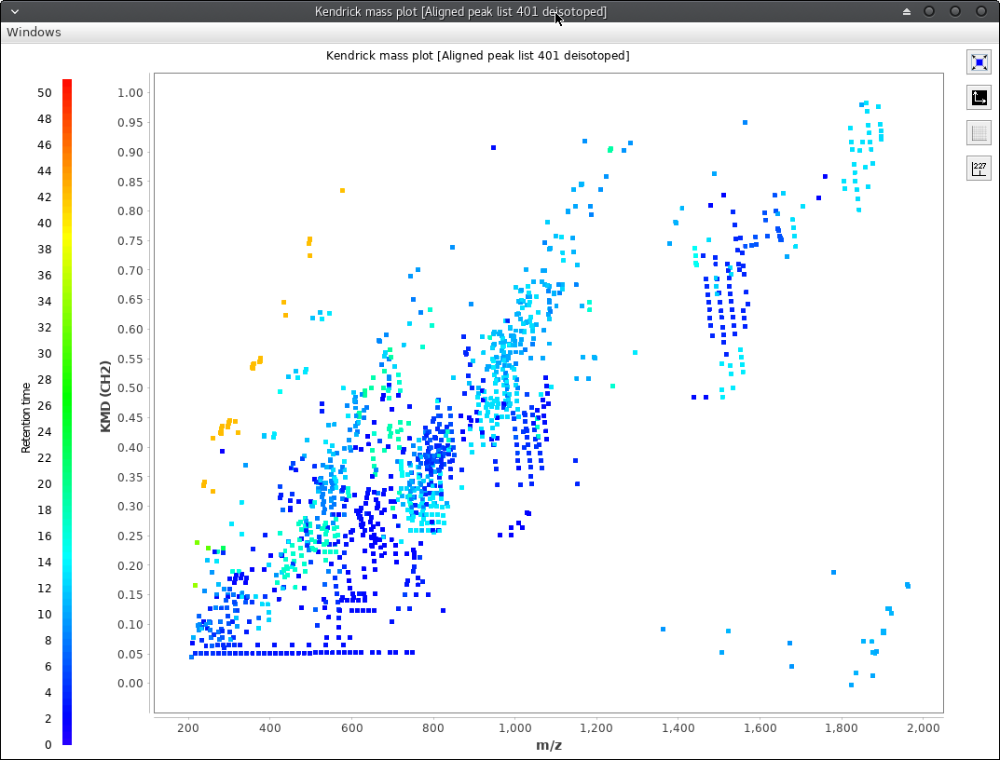
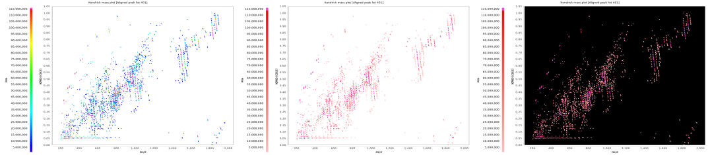

Functionality
This module allows to create 2 and 3 dimensional Kendrick mass plots. All possible feature characteristics can be plotted in a third dimension. The plot window has a toolbar on the right side. The first button changes the size of the blocks, the second toggle the background color between black and white, the third toggles the visibility of a grid and the fourth adds annotations for identified features.

A rainbow or monochrome color coded paint scale can be used for the third dimension. Depending on the dataset, a black background of the plot may result in a better contrast.

The contrast can be further improved by removing extremly high or low values from the paint scale. This can be achived using the "Range for z-axis scale" parameter. Features above the limit are displayed in magenta, features below the limit are displayed in black.

Furthermore, identified features can be labeled using the last button of the toolbar on the right.